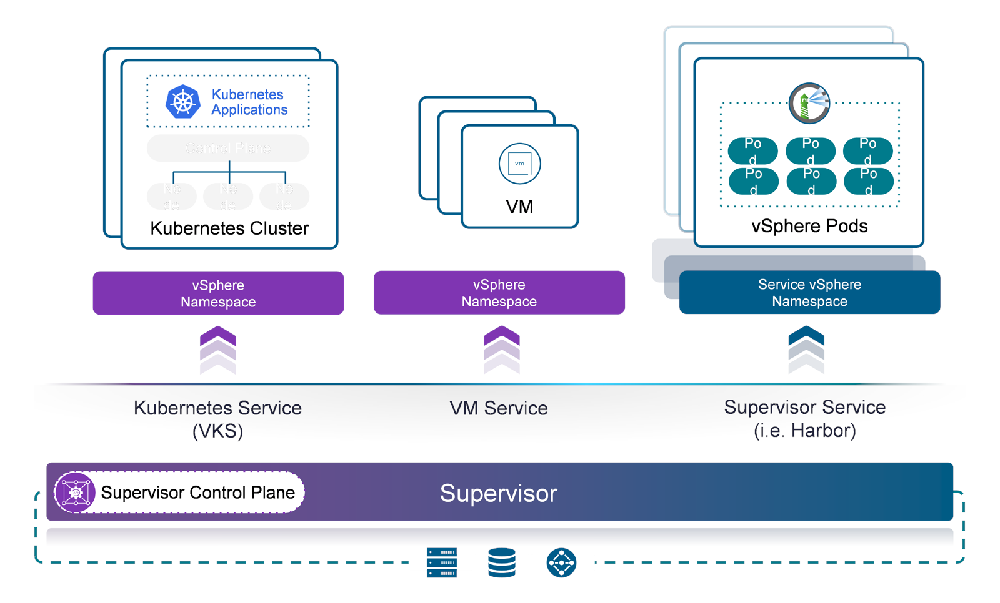
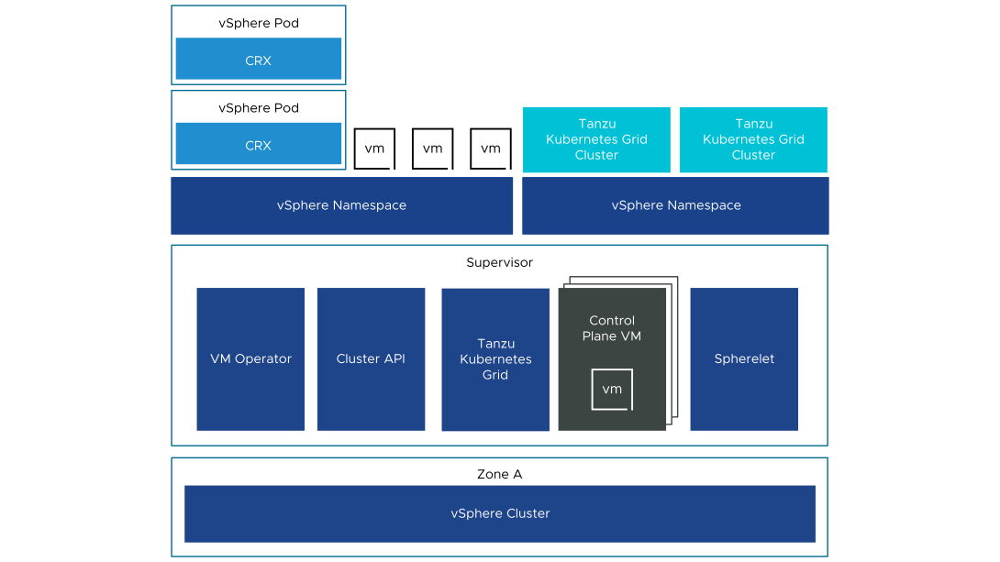

vSphere 클러스터를 스마트한 Kubernetes 제어 허브로 변환합니다
Supervisor는 vSphere 클러스터의 잠재력을 극대화하여 강력한 Kubernetes 제어 계층으로 작동하게 만드는 핵심 기능입니다. 클러스터에 Supervisor가 활성화되면, 관리자는 네임스페이스 단위로 정교하게 자원을 분할하여 Kubernetes 클러스터와 전통적인 가상 머신(VM)을 동일한 인프라 위에서 조화롭게 배포할 수 있습니다. 복잡한 이중 구조를 없애고, 가상화와 컨테이너를 하나의 체계 안에서 효율적으로 운영할 수 있는 길을 제시합니다.


소프트웍스가 하는 일
Supervisor를 활성화할 클러스터 선택은 VKS 전체의 안정성을 좌우하는 첫 단추입니다. 기존 운영 업무가 올라간 클러스터에 그대로 활성화하면 예기치 못한 자원 경합이 발생할 위험이 있습니다. 소프트웍스는 프로젝트 착수 단계에서 고객사의 현재 자원 여유량과 장애 발생 시 영향 범위를 다각도로 검토합니다. 전용 클러스터를 별도 구성할지, 기존 클러스터를 증설할지에 대해 현장 환경에 가장 부합하는 아키텍처 가이드라인을 제시합니다.